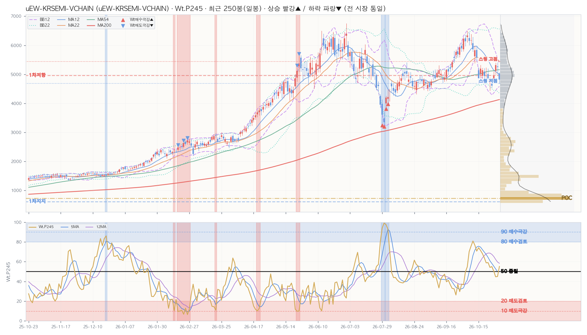

| 구분 | 가격 | 현재가 대비 | 거래 비중 | 봉우리 높이 |
|---|---|---|---|---|
| ▲ 저항 1차 | 4,962 | +2.9% | 10.3% | 0.18 |
| ▲ 저항 2·3차 — | 현재가 위 거래 봉우리 1개뿐 | |||
| ■ 소화 중 — | 현재가 ±0.25×ATR 안 거래 봉우리 없음 | |||
| ▼ 지지 1차 | 617 | 멀리 -87.2% | 28.3% | 0.98 |
| ▼ 지지 2·3차 — | 현재가 아래 거래 봉우리 1개뿐 | |||
| ┄ 스윙 고점 (참고) | 5,441 | +12.9% | 피벗 4개 · 마지막 32봉 전 | |
| ┄ 스윙 저점 (참고) | 4,689 | -2.7% | 피벗 3개 · 마지막 11봉 전 | |
| 지표 | D 일봉 | W 주봉 | M 월봉 |
|---|---|---|---|
| Close | 4,820 | 4,820 | 4,820 |
| Chg% | ▼ -8.13% | ▲ +0.01% | ▼ -18.22% |
| SigNm | 59.2 | 58.9 | 43.3 |
| SigRk | 76.9 | 87.6 | 68.5 |
| PvN2 | 0 | 0 | 0 |
| WtAll | 40 | 64 | 70 |
nix_snapshot_market_temp_kr.json (2026-10-30 · 읽기 전용 크로스 참조)| 창 | 5봉 | 12봉 | 22봉 | 54봉 | 120봉 | 245봉 | 컴포짓 | 주봉 참고 |
|---|---|---|---|---|---|---|---|---|
| 사분면 | 약화 | 약화 | 리딩 | 약화 | 약화 | 리딩 | 약화 | 리딩 |
| RS-Ratio | 118.56 ▼ | 120.72 ▼ | 123.09 ▼ | 119.81 ▼ | 120.63 ▼ | 121.84 ▼ | 121.27 ▼ | 120.86 ▲ |
| RS-Momentum | 92.16 ▲ | 90.71 ▼ | 115.23 ▼ | 97.40 ▲ | 90.69 ▲ | 100.12 ▼ | 98.74 ▼ | 100.48 ▼ |
| Perf | Mac | Tcr.U | Tcr.D | Zc | BBs | PvN2 | Sts | Wt.P245 | SA.P245 | SA02.P245 | S122.P245 | S051.P245 | SU31.P245 | Inds.Sig | ||||||||||||||||||||||||||||||||||||||||||||||||||
|---|---|---|---|---|---|---|---|---|---|---|---|---|---|---|---|---|---|---|---|---|---|---|---|---|---|---|---|---|---|---|---|---|---|---|---|---|---|---|---|---|---|---|---|---|---|---|---|---|---|---|---|---|---|---|---|---|---|---|---|---|---|---|---|---|
| SigNm | SigRk | |||||||||||||||||||||||||||||||||||||||||||||||||||||||||||||||
| Date | T-Set | H | L | C | V | Chg% | DChg% | YTD | P5 | P12 | P16 | P22 | P54 | P120 | P245 | Cdl | 종합 | 단 | 중 | 장 | 5 | 12 | 22 | 54 | 5 | 12 | 22 | 54 | 12 | 22 | 54 | 12 | 22 | 54 | D | MA_Sts | C_Sts | EMC_Sts | .P | .J | Bar(P) | Ar | .P | .J | Bar(P) | Ar | .P | .J | Bar(P) | Ar | .P | .J | Bar(P) | Ar | .P | .J | Bar(P) | Ar | .P | .J | Bar(P) | Ar | D | D |
| 2026-10-30 | else | 5,061 | 4,682 | 4,820 | 30.3M | -8.1 | +0.0 | +180.7 | +0.0 | -13.6 | -21.7 | -15.4 | +3.2 | +15.7 | +223.5 | 11 | -4 | -11 | 2 | -7 | 0.3 | 0.4 | 0.4 | 0.5 | 0.3 | 0.3 | 1.2 | 1.1 | -0.8 | -1.1 | -0.7 | 0 | 0 | 0 | 0 | 🟥🟥🟥🟥🟥🟦🟥🟦 | 🟥🟥🟦🟦🟦🟦🟦🟦 | 🟥🟥🟥🟦🟦🟦🟦🟦 | 55.1 | 🔹 | ███████ | ↔ | ➖ | – | 30.4 | 🟠 | ███ | ↔ | ➖ | – | ➖ | – | 34.6 | 🟠 | ████ | ↔ | 59.2 | 76.9 | ||||||
| 2026-10-29 | else | 5,412 | 4,995 | 5,247 | 37.0M | -1.4 | -8.1 | +205.5 | +8.5 | -10.0 | -17.3 | -9.2 | +19.8 | +33.4 | +263.1 | 11 | -4 | -11 | 2 | -7 | 0.6 | 0.6 | 0.6 | 0.7 | 0.1 | 0.6 | 1.1 | 1.0 | 0.8 | -0.5 | 0.2 | 0 | 0 | 0 | 0 | 🟥🟥🟥🟥🟥🟦🟦🟥 | 🟥🟥🟥🟥🟥🟦🟥🟥 | 🟥🟥🟥🟥🟥🟥🟥🟥 | 44.9 | 🔸 | █████ | ▼ | ➖ | – | 26.8 | 🔴 | ███ | ↔ | ➖ | – | ➖ | – | 33.0 | 🟠 | ████ | ▼ | 41.8 | 62.3 | ||||||
| 2026-10-28 | else | 5,394 | 4,994 | 5,322 | 31.7M | +7.4 | -9.4 | +209.9 | +5.5 | -9.2 | -13.3 | -4.3 | +20.1 | +32.8 | +259.9 | -5 | -4 | -11 | 2 | -7 | 0.5 | 0.6 | 0.5 | 0.7 | 0.2 | 0.7 | 1.0 | 1.0 | 0.7 | -0.4 | 0.4 | 0 | 0 | 0 | 0 | 🟥🟥🟥🟦🟥🟦🟦🟥 | 🟥🟥🟥🟥🟥🟦🟥🟥 | 🟥🟥🟥🟥🟥🟥🟥🟥 | 44.6 | 🔸 | █████ | ▼ | ➖ | – | 27.4 | 🔴 | ███ | ▼ | ➖ | – | ➖ | – | 33.3 | 🟠 | ████ | ▼ | 40.9 | 61.2 | ||||||
| 2026-10-27 | else | 5,096 | 4,771 | 4,953 | 25.4M | +7.5 | -2.7 | +188.4 | +0.2 | -19.8 | -20.5 | -8.5 | +8.1 | +24.6 | +241.9 | 5 | -4 | -11 | 2 | -7 | 0.4 | 0.4 | 0.3 | 0.5 | 0.3 | 1.2 | 1.2 | 1.3 | -0.5 | -1.1 | -0.3 | 0 | 0 | 0 | 0 | 🟥🟥🟥🟦🟥🟦🟦🟥 | 🟥🟥🟦🟦🟦🟦🟦🟥 | 🟥🟥🟥🟦🟦🟦🟦🟥 | 50.4 | 📈 | ██████ | ▼ | ➖ | – | 25.2 | 🔴 | ███ | ▼ | ➖ | – | ➖ | – | 31.1 | 🟠 | ████ | ▼ | 51.5 | 76.0 | ||||||
| 2026-10-26 | else | 4,807 | 4,542 | 4,608 | 18.9M | -4.4 | +4.6 | +168.3 | -10.3 | -25.1 | -21.8 | -11.3 | +5.5 | +17.7 | +223.5 | 7 | -4 | -11 | 2 | -7 | 0.2 | 0.2 | 0.2 | 0.4 | 0.5 | 1.6 | 1.3 | 1.4 | -1.3 | -1.8 | -1.0 | 0 | 0 | 0 | -3 | 🟥🟥🟥🟦🟥🟦🟦🟦 | 🟥🟥🟦🟦🟦🟦🟦🟦 | 🟥🟥🟦🟦🟦🟦🟦🟦 | 55.0 | 📈 | ███████ | ▼ | ➖ | – | 26.3 | 🔴 | ███ | ▼ | ➖ | – | ➖ | – | 35.6 | 🔶 | ████ | ▼ | 71.0 | 90.3 | ||||||
| 2026-10-23 | else | 4,886 | 4,438 | 4,820 | 27.1M | -0.3 | +0.0 | +180.6 | -7.2 | -24.0 | -18.7 | -5.3 | +14.2 | +24.4 | +245.5 | 0 | -2 | -7 | 2 | -7 | 0.3 | 0.3 | 0.3 | 0.6 | 0.3 | 1.4 | 1.1 | 1.3 | -1.1 | -1.5 | -0.6 | 0 | -3.4 | 0 | -2 | 🟥🟥🟥🟦🟥🟦🟦🟦 | 🟥🟥🟦🟦🟦🟦🟦🟦 | 🟥🟥🟥🟦🟦🟦🟦🟦 | 54.2 | 📈 | ███████ | ▼ | ➖ | – | 25.9 | 🔴 | ███ | ▼ | ➖ | – | ➖ | – | 36.5 | 🔶 | ████ | ▼ | 65.6 | 85.0 | ||||||
| 2026-10-22 | else | 5,199 | 4,773 | 4,836 | 21.7M | -4.2 | -0.3 | +181.6 | -0.5 | -21.2 | -15.1 | -6.1 | +15.1 | +29.6 | +247.9 | 0 | -2 | -7 | 2 | -7 | 0.1 | 0.2 | 0.2 | 0.7 | 0.4 | 1.4 | 1.1 | 1.3 | -1.2 | -1.6 | -0.5 | 0 | 0 | 0 | -2 | 🟥🟥🟥🟦🟥🟦🟦🟦 | 🟥🟥🟦🟦🟦🟦🟦🟦 | 🟥🟥🟥🟦🟦🟦🟦🟦 | 59.0 | 🔹 | ███████ | ▼ | ➖ | – | 33.6 | 🟠 | ████ | ▼ | ➖ | – | ➖ | – | 46.2 | 📉 | ██████ | ▼ | 66.4 | 86.7 | ||||||
| 2026-10-21 | else | 5,235 | 4,893 | 5,046 | 27.6M | +2.0 | -4.5 | +193.8 | -9.5 | -19.0 | -12.7 | +3.2 | +51.0 | +34.5 | +254.4 | -4 | -2 | -7 | 2 | -7 | 0.4 | 0.3 | 0.2 | 0.9 | 0.3 | 1.0 | 1.0 | 1.2 | -1.1 | -1.2 | -0.1 | 0 | 0 | 0 | 0 | 🟥🟥🟥🟦🟥🟥🟦🟥 | 🟥🟥🟦🟦🟦🟦🟦🟥 | 🟥🟥🟥🟥🟦🟦🟦🟦 | 58.7 | 🔹 | ███████ | ▼ | ➖ | – | 36.6 | 🔶 | ████ | ▼ | ➖ | – | ➖ | – | 45.4 | 📉 | █████ | ▼ | 54.0 | 78.6 | ||||||
| 2026-10-20 | else | 5,206 | 4,818 | 4,946 | 27.6M | -3.7 | -2.5 | +188.0 | -15.1 | -16.1 | -11.1 | +2.2 | +37.2 | +34.0 | +255.4 | 2 | -2 | -7 | 2 | -7 | 0.3 | 0.2 | 0.2 | 1.4 | 0.9 | 0.9 | 0.9 | 1.2 | -1.5 | -1.4 | -0.2 | 0 | 0 | 0 | 0 | 🟥🟥🟥🟦🟥🟥🟦🟦 | 🟥🟥🟦🟦🟦🟦🟦🟦 | 🟥🟥🟥🟦🟦🟦🟦🟦 | 64.0 | 🔷 | ████████ | ↔ | ➖ | – | 42.7 | 🔸 | █████ | ▼ | ➖ | – | ➖ | – | 50.9 | 📈 | ██████ | ▼ | 62.4 | 82.2 | ||||||
| 2026-10-19 | else | 5,219 | 4,817 | 5,136 | 28.7M | -1.1 | -6.2 | +199.1 | -12.4 | -13.4 | -5.1 | +2.4 | +29.9 | +43.3 | +266.7 | -5 | -2 | -7 | 2 | -7 | 0.4 | 0.3 | 0.3 | 1.5 | 0.7 | 0.8 | 0.8 | 1.1 | -1.4 | -1.0 | 0.2 | -0.7 | 0 | 0 | 0 | 🟥🟥🟥🟦🟥🟥🟦🟦 | 🟥🟥🟥🟦🟥🟦🟦🟦 | 🟥🟥🟥🟥🟦🟦🟦🟦 | 68.2 | 🔷 | ████████ | ↔ | ➖ | – | 53.9 | 📈 | ███████ | ▼ | ➖ | – | ➖ | – | 61.9 | 🔷 | ████████ | ↔ | 50.0 | 77.3 | ||||||
| 2026-10-16 | else | 5,318 | 4,859 | 5,194 | 32.2M | +6.9 | -7.2 | +202.4 | -15.9 | -8.8 | +0.0 | +1.0 | +13.1 | +48.4 | +271.0 | 0 | -2 | -7 | 2 | -7 | 0.3 | 0.3 | 0.3 | 1.5 | 0.6 | 0.7 | 0.8 | 1.0 | -1.5 | -0.8 | 0.3 | -2.8 | 0 | 0 | 0 | 🟥🟥🟥🟦🟥🟥🟦🟦 | 🟥🟥🟥🟦🟥🟦🟦🟦 | 🟥🟥🟥🟥🟦🟦🟦🟦 | 71.4 | 🔵 | █████████ | ↔ | ➖ | – | 58.3 | 🔹 | ███████ | ↔ | ➖ | – | ➖ | – | 67.5 | 🔷 | ████████ | ↔ | 52.6 | 75.9 | ||||||
| 2026-10-15 | else | 5,245 | 4,660 | 4,859 | 50.8M | -12.9 | -0.8 | +182.9 | -21.0 | -15.9 | -4.6 | -3.9 | +7.2 | +41.5 | +258.3 | 8 | -2 | -7 | 2 | -7 | 0.2 | 0.2 | 0.3 | 1.5 | 0.5 | 0.7 | 0.8 | 1.1 | -2.7 | -1.5 | -0.2 | -9.1 | 0 | 0 | -1 | 🟥🟥🟥🟦🟥🟥🟦🟦 | 🟥🟥🟦🟦🟦🟦🟦🟦 | 🟥🟥🟥🟦🟦🟦🟦🟦 | 74.1 | 🔵 | █████████ | ↔ | ➖ | – | 60.5 | 🔷 | ███████ | ↔ | ➖ | – | ➖ | – | 68.4 | 🔷 | ████████ | ↔ | 60.1 | 78.0 | ||||||
| 2026-10-14 | else | 5,981 | 5,454 | 5,578 | 30.7M | -4.3 | -13.6 | +224.8 | -12.1 | +0.3 | +8.4 | +14.7 | +10.8 | +68.5 | +294.4 | 10 | -2 | -7 | 2 | -7 | 0.2 | 0.2 | 0.7 | 2.2 | 0.4 | 0.5 | 0.6 | 0.7 | -1.7 | -0.0 | 0.9 | -1.1 | 0 | 0 | -1 | 🟥🟥🟥🟦🟥🟥🟦🟦 | 🟥🟥🟥🟥🟥🟦🟦🟦 | 🟥🟥🟥🟥🟥🟦🟦🟦 | 70.6 | 🔵 | █████████ | ↔ | ➖ | – | 59.9 | 🔹 | ███████ | ↔ | ➖ | – | ➖ | – | 62.4 | 🔷 | ████████ | ↔ | 49.5 | 68.8 | ||||||
| 2026-10-13 | else | 5,979 | 5,386 | 5,829 | 42.5M | -0.6 | -17.3 | +239.4 | -5.0 | +7.7 | +19.2 | +17.9 | +18.0 | +81.2 | +307.4 | 0 | -2 | -7 | 2 | -7 | 0.3 | 0.3 | 0.9 | 2.4 | 0.4 | 0.4 | 0.5 | 0.6 | -0.6 | 0.6 | 1.3 | -2.2 | 0 | 0 | 0 | 🟥🟥🟥🟦🟥🟥🟥🟦 | 🟥🟥🟥🟥🟥🟥🟦🟦 | 🟥🟥🟥🟥🟥🟥🟦🟦 | 76.7 | 🔵 | █████████ | ▲ | ➖ | – | 77.4 | 🔵 | ██████████ | ↔ | ➖ | – | ➖ | – | 75.1 | 🔵 | █████████ | ↔ | 42.0 | 60.2 | ||||||
| 2026-10-12 | else | 6,282 | 5,787 | 5,862 | 31.7M | -5.0 | -17.8 | +241.3 | -5.9 | +12.9 | +21.2 | +23.5 | +15.2 | +86.7 | +326.9 | -5 | -2 | -7 | 2 | -7 | 0.1 | 0.6 | 1.0 | 2.7 | 0.4 | 0.4 | 0.4 | 0.5 | -0.3 | 0.7 | 1.4 | 0 | 0 | 0.9 | 0 | 🟥🟥🟥🟦🟥🟥🟥🟦 | 🟥🟥🟥🟥🟥🟥🟦🟦 | 🟥🟥🟥🟥🟥🟥🟦🟦 | 80.9 | 🟦 | ██████████ | ▲ | ➖ | – | 86.8 | Ⓜ️ | ███████████ | ▲ | ➖ | – | ➖ | – | 81.3 | 🟦 | ██████████ | ▲ | 39.2 | 59.5 | ||||||
| 2026-10-08 | else | 6,380 | 6,018 | 6,173 | 31.7M | +0.3 | -21.9 | +259.5 | +4.7 | +21.3 | +23.1 | +35.2 | +21.8 | +98.5 | +370.3 | -9 | -2 | -7 | 2 | -7 | 0.3 | 0.9 | 1.4 | 3.0 | 0.3 | 0.3 | 0.3 | 0.3 | 0.9 | 1.4 | 2.0 | 0 | 0 | 3.1 | 0 | 🟥🟥🟥🟦🟥🟥🟥🟦 | 🟥🟥🟥🟥🟥🟥🟥🟦 | 🟥🟥🟥🟥🟥🟥🟥🟥 | 75.7 | 🔵 | █████████ | ▲ | ➖ | – | 91.6 | 🅿️ | ███████████ | ▲ | ➖ | – | ➖ | – | 85.1 | Ⓜ️ | ███████████ | ▲ | 30.4 | 48.5 | ||||||
| Perf | Mac | Tcr.U | Tcr.D | Zc | BBs | PvN2 | Sts | Wt.P54 | SA.P54 | SA02.P54 | S122.P54 | S051.P54 | SU31.P54 | Inds.Sig | |||||||||||||||||||||||||||||||||||||||||||||||||||
|---|---|---|---|---|---|---|---|---|---|---|---|---|---|---|---|---|---|---|---|---|---|---|---|---|---|---|---|---|---|---|---|---|---|---|---|---|---|---|---|---|---|---|---|---|---|---|---|---|---|---|---|---|---|---|---|---|---|---|---|---|---|---|---|---|---|
| SigNm | SigRk | ||||||||||||||||||||||||||||||||||||||||||||||||||||||||||||||||
| Date | T-Set | H | L | C | V | Chg% | DChg% | YTD | P1 | P3 | P5 | P8 | P12 | P16 | P22 | P54 | Cdl | 종합 | 단 | 중 | 장 | 5 | 12 | 22 | 54 | 5 | 12 | 22 | 54 | 12 | 22 | 54 | 12 | 22 | 54 | W | MA_Sts | C_Sts | EMC_Sts | .P | .J | Bar(P) | Ar | .P | .J | Bar(P) | Ar | .P | .J | Bar(P) | Ar | .P | .J | Bar(P) | Ar | .P | .J | Bar(P) | Ar | .P | .J | Bar(P) | Ar | W | W |
| 2026-10-30 | else | 5,412 | 4,542 | 4,820 | 143.3M | +0.0 | +0.0 | +180.7 | +0.0 | -21.9 | -16.6 | +1.5 | +10.1 | -13.0 | -7.6 | +246.4 | -2 | -5 | 2 | -7 | -7 | 0.2 | 0.2 | 0.7 | 1.1 | 0.6 | 0.6 | 0.8 | 0.6 | -0.7 | -0.7 | 0.7 | 0 | 0 | 0 | 0 | 🟥🟥🟥🟥🟥🟦🟥🟦 | 🟥🟥🟥🟥🟥🟦🟦🟦 | 🟥🟥🟥🟥🟥🟦🟦🟦 | 56.0 | 🔹 | ███████ | ↔ | ➖ | – | 28.5 | 🔴 | ███ | ↔ | ➖ | – | ➖ | – | 39.0 | 🔶 | █████ | ↔ | 58.9 | 87.6 | ||||||
| 2026-10-23 | else | 5,235 | 4,438 | 4,820 | 132.8M | -7.2 | +0.0 | +180.6 | -7.2 | -21.5 | -7.2 | +1.2 | +14.7 | -16.1 | -5.9 | +236.9 | 5 | -5 | 2 | -7 | -7 | 0.2 | 0.4 | 0.8 | 1.2 | 0.4 | 0.5 | 0.7 | 0.5 | -0.6 | -0.7 | 0.8 | 0 | 0 | 0 | -1 | 🟥🟥🟥🟥🟥🟦🟥🟦 | 🟥🟥🟥🟥🟥🟦🟦🟦 | 🟥🟥🟥🟥🟥🟦🟦🟦 | 66.8 | 🔷 | ████████ | ▲ | ➖ | – | 46.3 | 📉 | ██████ | ▲ | ➖ | – | ➖ | – | 56.7 | 🔹 | ███████ | ▲ | 57.1 | 86.5 | ||||||
| 2026-10-16 | else | 6,282 | 4,660 | 5,194 | 187.9M | -15.9 | -7.2 | +202.4 | -15.9 | -10.1 | +3.6 | +13.3 | +14.6 | -10.8 | +17.8 | +278.3 | 0 | -5 | 2 | -7 | -7 | 0.2 | 0.8 | 1.0 | 1.3 | 0.3 | 0.4 | 0.5 | 0.4 | 0.2 | -0.1 | 1.0 | 0 | 0 | 0 | 0 | 🟥🟥🟥🟥🟥🟦🟥🟦 | 🟥🟥🟥🟥🟥🟦🟥🟦 | 🟥🟥🟥🟥🟥🟥🟦🟦 | 70.5 | 🔵 | █████████ | ▲ | ➖ | – | 56.4 | 🔹 | ███████ | ▲ | ➖ | – | ➖ | – | 56.8 | 🔹 | ███████ | ▲ | 43.8 | 77.7 | ||||||
| 2026-10-08 | else | 6,498 | 6,008 | 6,173 | 81.0M | +0.6 | -21.9 | +259.5 | +0.6 | +18.9 | +30.0 | +22.7 | +14.7 | +3.7 | +40.3 | +399.1 | 4 | -5 | 2 | -7 | -7 | 0.8 | 1.6 | 1.6 | 1.6 | 0.2 | 0.2 | 0.4 | 0.2 | 1.8 | 1.6 | 1.6 | 2.9 | 1.0 | 0 | +10 | 🟥🟥🟥🟥🟥🟦🟥🟥 | 🟥🟥🟥🟥🟥🟥🟥🟥 | 🟥🟥🟥🟥🟥🟥🟥🟥 | 49.5 | 📉 | ██████ | ↔ | ➖ | – | 51.8 | 📈 | ██████ | ▲ | ➖ | – | ➖ | – | 53.8 | 📈 | ██████ | ▲ | 16.9 | 51.8 | ||||||
| 2026-10-02 | else | 6,359 | 5,588 | 6,138 | 127.3M | +6.2 | -21.5 | +257.4 | +6.2 | +22.4 | +28.9 | +40.2 | +10.8 | +0.3 | +56.1 | +399.1 | 0 | -7 | -7 | -7 | -7 | 0.7 | 1.5 | 1.2 | 1.5 | 0.2 | 0.2 | 0.4 | 0.3 | 2.1 | 1.7 | 1.7 | 4.7 | 0.5 | 0 | +10 | 🟥🟥🟥🟥🟥🟦🟥🟥 | 🟥🟥🟥🟥🟥🟥🟥🟥 | 🟥🟥🟥🟥🟥🟥🟥🟥 | 41.3 | 🔸 | █████ | ↔ | ➖ | – | 38.7 | 🔶 | █████ | ▲ | ➖ | – | ➖ | – | 50.7 | 📈 | ██████ | ▲ | 16.6 | 49.4 | ||||||
| 2026-09-23 | else | 5,847 | 5,146 | 5,778 | 94.8M | +11.2 | -16.6 | +236.4 | +11.2 | +21.7 | +26.0 | +37.5 | +0.6 | +10.4 | +49.1 | +424.1 | -11 | -7 | -7 | -7 | -7 | 0.6 | 1.4 | 1.0 | 1.4 | 0.1 | 0.3 | 0.5 | 0.4 | 1.8 | 1.2 | 1.5 | 0 | 0 | 0 | +3 | 🟥🟥🟥🟥🟥🟦🟥🟥 | 🟥🟥🟥🟥🟥🟥🟥🟥 | 🟥🟥🟥🟥🟥🟥🟥🟥 | 40.4 | 🔸 | █████ | ↔ | ➖ | – | 26.5 | 🔴 | ███ | ▲ | ➖ | – | ➖ | – | 35.3 | 🔶 | ████ | ▲ | 23.2 | 58.4 | ||||||
| 2026-09-18 | else | 5,358 | 4,712 | 5,194 | 116.5M | +3.6 | -7.2 | +202.4 | +3.6 | +9.0 | +3.2 | +14.6 | -10.8 | -0.4 | +48.4 | +437.7 | -2 | -7 | -7 | -7 | -7 | 0.4 | 1.1 | 0.8 | 1.3 | 0.2 | 1.0 | 0.7 | 0.5 | 0.6 | 0.4 | 1.3 | 0 | 0 | 0 | +2 | 🟥🟥🟥🟥🟥🟦🟦🟥 | 🟥🟥🟥🟥🟥🟥🟥🟥 | 🟥🟥🟥🟥🟥🟥🟥🟥 | 40.3 | 🔸 | █████ | ↔ | ➖ | – | 13.4 | 🆘 | █ | ▲ | ➖ | – | ➖ | – | 20.1 | 🟥 | ██ | ▲ | 32.8 | 71.1 | ||||||
| 2026-09-11 | else | 5,310 | 4,805 | 5,014 | 156.0M | +5.6 | -3.9 | +192.0 | +5.6 | +9.3 | +14.5 | -6.8 | -15.7 | -2.1 | +61.3 | +424.9 | -6 | -7 | -7 | -7 | -7 | 0.4 | 0.9 | 0.7 | 1.3 | 0.3 | 1.0 | 0.7 | 0.6 | 0.1 | 0.2 | 1.2 | 0 | 0 | 0 | 0 | 🟥🟥🟥🟥🟥🟥🟦🟥 | 🟥🟥🟥🟥🟥🟥🟥🟥 | 🟥🟥🟥🟥🟥🟥🟥🟥 | 37.2 | 🔶 | ████ | ▼ | ➖ | – | 5.5 | 🚫 | ↔ | ➖ | – | ➖ | – | 11.1 | 🆘 | █ | ▲ | 35.3 | 73.2 | |||||||
| 2026-09-04 | else | 4,861 | 4,435 | 4,748 | 119.9M | -0.3 | +1.5 | +176.5 | -0.3 | -5.6 | +13.0 | -14.3 | -22.4 | +7.7 | +75.8 | +431.1 | -2 | -7 | -7 | -7 | -7 | 0.5 | 0.8 | 0.7 | 1.2 | 0.5 | 1.1 | 0.7 | 0.6 | -0.5 | -0.1 | 1.1 | 0 | 0 | 0 | 0 | 🟥🟥🟥🟥🟥🟥🟦🟥 | 🟥🟥🟥🟥🟥🟦🟦🟥 | 🟥🟥🟥🟥🟥🟥🟦🟥 | 40.4 | 🔸 | █████ | ↔ | ➖ | – | 3.7 | ⛔ | ▼ | ➖ | – | ➖ | – | 5.8 | 🚫 | ▲ | 45.9 | 85.6 | ||||||||
| 2026-08-28 | else | 4,977 | 4,315 | 4,764 | 147.5M | +3.9 | +1.2 | +177.4 | +3.9 | +8.8 | +5.1 | -17.0 | -9.0 | +8.3 | +72.1 | +411.2 | -4 | -7 | -7 | -7 | -7 | 0.7 | 0.6 | 0.7 | 1.2 | 0.3 | 0.8 | 0.6 | 0.6 | -0.6 | 0.1 | 1.1 | 0 | 0 | 0 | 0 | 🟥🟥🟥🟥🟥🟥🟦🟥 | 🟥🟥🟥🟥🟥🟥🟦🟥 | 🟥🟥🟥🟥🟥🟥🟦🟥 | 41.8 | 🔸 | █████ | ↔ | ➖ | – | 4.9 | ⛔ | ▼ | ➖ | – | ➖ | – | 5.6 | 🚫 | ↔ | 49.6 | 85.9 | ||||||||
| 2026-08-21 | else | 5,404 | 4,473 | 4,586 | 146.1M | -8.8 | +5.1 | +167.0 | -8.8 | +9.1 | -14.8 | -21.3 | -12.1 | +16.6 | +58.6 | +394.1 | 11 | -7 | -7 | -7 | -7 | 0.5 | 0.5 | 0.6 | 1.2 | 0.3 | 0.7 | 0.6 | 0.6 | -1.0 | -0.0 | 1.0 | 0 | 0 | 0 | 0 | 🟥🟥🟥🟥🟥🟥🟦🟥 | 🟥🟥🟥🟥🟥🟦🟦🟥 | 🟥🟥🟥🟥🟥🟥🟦🟦 | 40.8 | 🔸 | █████ | ↔ | ➖ | – | 2.4 | ⛔ | ▼ | ➖ | – | ➖ | – | 2.8 | ⛔ | ▼ | 52.3 | 87.0 | ||||||||
| 2026-08-14 | else | 5,196 | 4,360 | 5,031 | 179.7M | +14.9 | -4.2 | +192.9 | +14.9 | +11.0 | -9.2 | -15.5 | -1.7 | +29.8 | +95.1 | +472.0 | -11 | -7 | -7 | -7 | -7 | 0.7 | 0.5 | 0.6 | 1.2 | 0.5 | 0.6 | 0.5 | 0.6 | -0.4 | 0.5 | 1.4 | 0 | 0 | 0 | 0 | 🟥🟥🟥🟥🟥🟥🟦🟥 | 🟥🟥🟥🟥🟥🟥🟦🟥 | 🟥🟥🟥🟥🟥🟥🟥🟥 | 38.0 | 🔶 | ████ | ↔ | ➖ | – | 1.6 | ⛔ | ▼ | ➖ | – | ➖ | – | 1.2 | ⛔ | ▼ | 38.5 | 77.1 | ||||||||
| Perf | Mac | Tcr.U | Tcr.D | Zc | BBs | PvN2 | Sts | Wt.P36 | SigNm.P36 | SigRk.P36 | Inds.Sig | ||||||||||||||||||||||||||||||||||||
|---|---|---|---|---|---|---|---|---|---|---|---|---|---|---|---|---|---|---|---|---|---|---|---|---|---|---|---|---|---|---|---|---|---|---|---|---|---|---|---|---|---|---|---|---|---|---|---|
| SigNm | SigRk | ||||||||||||||||||||||||||||||||||||||||||||||
| Date | T-Set | H | L | C | V | Chg% | DChg% | YTD | P1 | P3 | P6 | P12 | P24 | P36 | Cdl | 종합 | 단 | 중 | 장 | 5 | 12 | 22 | 5 | 12 | 22 | 12 | 22 | 12 | 22 | M | MA_Sts | C_Sts | EMC_Sts | .P | .J | Bar(P) | Ar | .P | .J | Bar(P) | Ar | .P | .J | Bar(P) | Ar | M | M |
| 2026-10-30 | else | 6,498 | 4,438 | 4,820 | 589.1M | -18.2 | +0.0 | +107.8 | -18.2 | +14.7 | +22.5 | +224.7 | +538.2 | +633.2 | 0 | -5 | -7 | -7 | 0 | 0.3 | 0.6 | 0.7 | 0.3 | 0.3 | 0.3 | 0.6 | 1.2 | 0 | 4.6 | 0 | 🟥🟥🟥🟥🟥🟦🟥🟦 | 🟥🟥🟥🟥🟥🟦🟦🟦 | 🟥🟥🟥🟥🟥🟦🟦🟦 | 75.8 | 🔵 | █████████ | ▲ | 71.7 | 🔵 | █████████ | ▲ | 85.3 | Ⓜ️ | ███████████ | ▲ | 43.3 | 68.5 |
| 2026-09-30 | else | 6,104 | 4,435 | 5,894 | 541.3M | +22.5 | -18.2 | +154.2 | +22.5 | -5.5 | +133.9 | +365.0 | +670.6 | +704.3 | 5 | -5 | -7 | -7 | 0 | 0.5 | 0.6 | 0.9 | 0.3 | 0.2 | 0.2 | 1.4 | 2.0 | 0 | 2.5 | +1 | 🟥🟥🟥🟥🟥🟦🟥🟥 | 🟥🟥🟥🟥🟥🟥🟥🟥 | 🟥🟥🟥🟥🟥🟥🟥🟥 | 41.1 | 🔸 | █████ | ▲ | 32.5 | 🟠 | ████ | ↔ | 61.0 | 🔷 | ███████ | ▲ | 20.2 | 48.1 |
| 2026-08-31 | else | 5,404 | 4,033 | 4,812 | 691.7M | +14.5 | +0.2 | +107.5 | +14.5 | -7.8 | +79.0 | +403.8 | +498.9 | +523.6 | 0 | -5 | -7 | -7 | 0 | 0.3 | 0.6 | 0.8 | 0.3 | 0.3 | 0.4 | 1.0 | 1.6 | 0 | 0 | 0 | 🟥🟥🟥🟥🟥🟥🟦🟥 | 🟥🟥🟥🟥🟥🟦🟦🟥 | 🟥🟥🟥🟥🟥🟥🟥🟥 | 64.6 | 🔷 | ████████ | ▲ | 59.6 | 🔹 | ███████ | ▲ | 76.4 | 🔵 | █████████ | ▲ | 37.0 | 59.8 |
| 2026-07-31 | else | 6,755 | 3,250 | 4,202 | 1.1B | -32.6 | +14.7 | +81.2 | -32.6 | +6.8 | +81.2 | +355.1 | +367.8 | +397.2 | 10 | -5 | -7 | -7 | 0 | 0.3 | 0.5 | 0.8 | 0.2 | 0.3 | 0.4 | 0.8 | 1.5 | 11.1 | 33.5 | -1 | 🟥🟥🟥🟥🟥🟥🟥🟦 | 🟥🟥🟥🟥🟥🟦🟦🟦 | 🟥🟥🟥🟥🟥🟦🟦🟦 | 60.4 | 🔷 | ███████ | ▲ | 57.5 | 🔹 | ███████ | ▲ | 67.3 | 🔷 | ████████ | ▲ | 35.7 | 51.9 |
| 2026-06-30 | else | 6,493 | 4,503 | 6,235 | 1.0B | +19.5 | -22.7 | +168.9 | +19.5 | +147.4 | +282.6 | +613.4 | +509.6 | +718.5 | 0 | -5 | -7 | -7 | 0 | 0.6 | 1.0 | 1.4 | 0.1 | 0.2 | 0.2 | 2.2 | 3.0 | 10.9 | 36.2 | +10 | 🟥🟥🟥🟥🟥🟥🟥🟥 | 🟥🟥🟥🟥🟥🟥🟥🟥 | 🟥🟥🟥🟥🟥🟥🟥🟥 | 12.7 | 🆘 | █ | ↔ | 10.5 | 🆘 | █ | ↔ | 17.8 | 🅰️ | ██ | ↔ | 1.3 | 14.7 |
| 2026-05-29 | else | 5,651 | 3,937 | 5,217 | 903.2M | +32.6 | -7.6 | +124.9 | +32.6 | +94.0 | +246.9 | +582.1 | +450.1 | +698.6 | 0 | -4 | 0 | -7 | 0 | 0.6 | 1.0 | 1.4 | 0.2 | 0.3 | 0.4 | 2.4 | 3.2 | 21.3 | 48.1 | +10 | 🟥🟥🟥🟥🟥🟥🟥🟥 | 🟥🟥🟥🟥🟥🟥🟥🟥 | 🟥🟥🟥🟥🟥🟥🟥🟥 | 13.7 | 🆘 | █ | ↔ | 10.8 | 🆘 | █ | ↔ | 20.3 | 🟥 | ██ | ↔ | 2.6 | 17.2 |
| 2026-04-30 | else | 4,126 | 2,616 | 3,934 | 794.5M | +56.1 | +22.5 | +69.6 | +56.1 | +69.6 | +165.0 | +451.7 | +307.2 | +543.1 | 0 | -4 | 0 | -7 | 0 | 0.5 | 0.9 | 1.3 | 0.2 | 0.2 | 0.3 | 2.4 | 3.2 | 15.8 | 39.2 | +10 | 🟥🟥🟥🟥🟥🟥🟥🟥 | 🟥🟥🟥🟥🟥🟥🟥🟥 | 🟥🟥🟥🟥🟥🟥🟥🟥 | 16.2 | 🅰️ | ██ | ↔ | 12.4 | 🆘 | █ | ▼ | 25.0 | 🔴 | ███ | ↔ | 5.8 | 22.0 |
| 2026-03-31 | else | 3,003 | 2,204 | 2,520 | 952.7M | -6.3 | +91.3 | +8.7 | -6.3 | +54.6 | +98.8 | +242.0 | +165.6 | +299.3 | 11 | -4 | 0 | -7 | 0 | 0.5 | 1.0 | 1.3 | 0.2 | 0.3 | 0.3 | 1.6 | 2.2 | 7.0 | 26.6 | 0 | 🟥🟥🟥🟥🟥🟥🟥🟦 | 🟥🟥🟥🟥🟥🟥🟥🟦 | 🟥🟥🟥🟥🟥🟥🟥🟥 | 31.6 | 🟠 | ████ | ↔ | 29.1 | 🔴 | ███ | ↔ | 37.4 | 🔶 | ████ | ↔ | 20.6 | 31.9 |
| 2026-02-27 | else | 2,780 | 2,105 | 2,689 | 774.1M | +15.9 | +79.3 | +15.9 | +15.9 | +78.8 | +181.5 | +255.1 | +216.3 | +374.2 | 6 | -4 | 0 | -7 | 0 | 0.5 | 1.2 | 1.6 | 0.1 | 0.2 | 0.2 | 2.2 | 3.0 | 8.9 | 29.6 | +10 | 🟥🟥🟥🟥🟥🟥🟥🟥 | 🟥🟥🟥🟥🟥🟥🟥🟥 | 🟥🟥🟥🟥🟥🟥🟥🟥 | 9.2 | 🚫 | █ | ↔ | 7.6 | 🚫 | ↔ | 13.0 | 🆘 | █ | ↔ | 1.7 | 11.2 | |
| 2026-01-30 | else | 2,429 | 1,609 | 2,319 | 955.8M | +42.3 | +107.8 | +0.0 | +42.3 | +56.2 | +151.2 | +220.8 | +201.1 | +314.6 | 0 | -4 | 0 | -7 | 0 | 0.6 | 1.1 | 1.6 | 0.2 | 0.3 | 0.4 | 2.5 | 3.3 | 15.4 | 34.7 | +10 | 🟥🟥🟥🟥🟥🟥🟥🟥 | 🟥🟥🟥🟥🟥🟥🟥🟥 | 🟥🟥🟥🟥🟥🟥🟥🟥 | 8.1 | 🚫 | █ | ↔ | 6.9 | 🚫 | ↔ | 11.1 | 🆘 | █ | ↔ | 2.5 | 10.5 | |
| 지표{tf} | 엣지방향 | 임계 | 현재(근접) | 기간 | OOS | 전체 edge | 격차 | 적중(하한) | n(neff) | q(BH) | 등급 |
|---|---|---|---|---|---|---|---|---|---|---|---|
| Wt.P+SA02.arrUp120 {일봉} | 높을때매수 | ≥95 | — | h32 | +34pp | +20pp | +13pp | 83% ↓64% | 69(25) | ✗1.0 | strong |
| Zc(22)z {월봉} | 낮을때매수 | ≤-0.1 | 1.2 🟡 근접 1.3 | h12 | +31pp | +28pp | +2pp | 98% ↓62% | 45(7) ⚠︎ne7 | ✗1.0 | ok |
| NormAll {월봉} | 낮을때매수 | ≤-1.99 | 1.5 대기 3.5 | h12 | +31pp | +24pp | +7pp | 93% ↓68% | 29(13) | ✗1.0 | strong |
| SigNm.P12 {월봉} | 낮을때매수 | ≤9 | 96.4 대기 87.4 | h12 | +31pp | +23pp | +8pp | 92% ↓67% | 26(13) | ✗1.0 | strong |
| SigNm.P12 {주봉} | 낮을때매수 | ≤4 | 91 대기 87.0 | h22 | +29pp | +21pp | +8pp | 92% ↓70% | 24(17) | ✗1.0 | strong |
| Rsi22 {일봉} | 높을때매수 | ≥72 | 45.4 대기 26.6 | h245 | +29pp | +19pp | +10pp | 87% ↓74% | 154(42) | ✗1.0 | strong |
| SigNm.P245 {일봉} | 낮을때매수 | ≤4 | 96.1 대기 92.1 | h245 | +26pp | +20pp | +6pp | 88% ↓79% | 189(76) | ✗0.64 | strong |
| Wt.P+Wt.arrUp120 {일봉} | 높을때매수 | ≥95 | — | h8 | +25pp | +19pp | +6pp | 77% ↓60% | 74(33) | ✗1.0 | strong |
| Wt.P12 {월봉} | 낮을때매수 | ≤9 | 96.4 대기 87.4 | h12 | +21pp | +19pp | +1pp | 89% ↓64% | 27(14) | ✗1.0 | strong |
| SigNm.P+SA02.arrUp245 {일봉} | 낮을때매수 | ≤4 | — | h8 | +19pp | +33pp | -13pp | 91% ↓62% | 22(11) | ✗1.0 | strong |
| SigRk.dc3x12 {주봉} | 낮을때매수 | ≥1 | — | h2 | +19pp | +13pp | +5pp | 71% ↓58% | 52(52) | ✗1.0 | ok |
| Wt.P120 {일봉} | 높을때매수 | ≥95 | 61.3 대기 33.7 | h8 | +17pp | +13pp | +5pp | 71% ↓54% | 128(34) | ✗1.0 | ok |
| Wt.P54 {일봉} | 높을때매수 | ≥95 | 56.4 대기 38.6 | h8 | +17pp | +20pp | -3pp | 78% ↓64% | 101(46) | ✗1.0 | strong |
| SigRk.P12 {월봉} | 낮을때매수 | ≤11.5 | 96.5 대기 85.0 | h12 | +16pp | +20pp | -3pp | 89% ↓62% | 37(12) | ✗1.0 | strong |
| SA02.P54 {일봉} | 높을때매수 | ≥95 | 37.7 대기 57.3 | h5 | +16pp | +14pp | +2pp | 71% ↓61% | 401(85) | ✗1.0 | ok |
| SU31.P54 {일봉} | 높을때매수 | ≥95 | 39.4 대기 55.6 | h5 | +15pp | +15pp | -0pp | 72% ↓63% | 391(95) | ✗1.0 | strong |
| SigNm.dc5x22 {주봉} | 낮을때매수 | ≥1 | — | h2 | +15pp | +10pp | +5pp | 68% ↓52% | 40(40) | ✗1.0 | ok |
| SigNm.P120 {일봉} | 낮을때매수 | ≤4 | 89 대기 85.0 | h245 | +15pp | +12pp | +3pp | 80% ↓71% | 212(95) | ✗1.0 | ok |
| SA02.gc0x5 {주봉} | 높을때매수 | ≥1 | — | h3 | +13pp | +9pp | +4pp | 68% ↓58% | 96(96) | ✗1.0 | ok |
| SigRk.P245 {일봉} | 낮을때매수 | ≤4 | 83.4 대기 79.4 | h54 | +13pp | +20pp | -7pp | 84% ↓73% | 172(59) | ✗1.0 | strong |
| PvN2 {주봉} | 높을때매수 | ≥5 | 0 대기 5.0 | h2 | +12pp | +9pp | +3pp | 67% ↓55% | 187(70) | ✗1.0 | ok |
| SigRk.P54 {주봉} | 낮을때매수 | ≤11.5 | 95.4 대기 83.9 | h2 | +11pp | +11pp | +0pp | 69% ↓53% | 137(40) | ✗1.0 | ok |
| SigRk.P22 {주봉} | 낮을때매수 | ≤4 | 83.1 대기 79.1 | h22 | +10pp | +16pp | -6pp | 87% ↓69% | 53(25) | ✗1.0 | strong |
| Wt.P+Wt.arrUp&SA02.arrUp120 {일봉} | 높을때매수 | ≥95 | — | h245 | +9pp | +14pp | -5pp | 82% ↓63% | 51(23) | ✗1.0 | ok |
| RankAll {일봉} | 높을때매수 | ≥7.15 | -5.9 대기 13.1 | h8 | +9pp | +9pp | +0pp | 67% ↓58% | 241(116) | ✗1.0 | ok |
| SigRk.dc5x22 {주봉} | 낮을때매수 | ≥1 | — | h2 | +9pp | +10pp | -1pp | 68% ↓51% | 34(34) | ✗1.0 | ok |
| NormAll {일봉} | 높을때매수 | ≥7.49 | -2 대기 9.5 | h245 | +8pp | +12pp | -4pp | 81% ↓72% | 192(100) | ✗1.0 | ok |
| SigNm.dc3x12 {주봉} | 낮을때매수 | ≥1 | — | h3 | +8pp | +11pp | -3pp | 70% ↓58% | 60(60) | ✗1.0 | ok |
| 지표{tf} | 임계 | 기간 | OOS초과 | 전체 | 적중(하한) | n(neff)·초과수익 |
|---|---|---|---|---|---|---|
| Wt.P54 {일봉} | ≤4 | h32 | +41pp | +36pp | 95% ↓75% | 38(19) · 초과수익 +6.2% |
| SigRk.P54 {주봉} | ≤4 | h22 | +32pp | +30pp | 98% ↓79% | 53(18) · 초과수익 +13.8% |
| NormAll {월봉} | ≤-1.99 | h12 | +28pp | +25pp | 97% ↓72% | 29(13) · 초과수익 +34.6% |
| Wt.P245 {일봉} | ≥95 | h16 | +18pp | +18pp | 75% ↓58% | 106(29) · 초과수익 +3.3% |
| SigNm.P12 {월봉} | ≤9 | h12 | +17pp | +21pp | 92% ↓67% | 26(13) · 초과수익 +63.6% |
| SigRk.dc5x22 {주봉} | ≥1 | h5 | +16pp | +16pp | 73% ↓56% | 33(34) · 초과수익 +2.7% |
| SigNm.P22 {주봉} | ≤4 | h3 | +14pp | +21pp | 76% ↓54% | 34(19) · 초과수익 +1.9% |
| Zc(22)z {일봉} | ≥1.83 | h22 | +14pp | +12pp | 69% ↓62% | 409(175) · 초과수익 +2.8% |
| SigRk.P12 {월봉} | ≤6.5 | h6 | +12pp | +23pp | 93% ↓64% | 27(11) · 초과수익 +21.0% |
| NormAll {일봉} | ≤-4.62 | h245 | +11pp | +17pp | 90% ↓82% | 243(94) · 초과수익 +26.4% |
| Zc(22)z+SA02.arrUp {일봉} | ≥1.83 | h8 | +11pp | +16pp | 72% ↓53% | 46(28) · 초과수익 +2.1% |
| Wt.P12 {월봉} | ≤11.5 | h12 | +10pp | +19pp | 91% ↓65% | 32(13) · 초과수익 +55.3% |
| tf | RSI5 | RSI12 | RSI22 | RSI54 | RSI90 | RSI150 | RSI245 |
|---|---|---|---|---|---|---|---|
| D | 38.5 | 41.9 | 45.4 | 49.7 | 51.6 | 53.0 | 53.9 |
| W | 35.3 | 48.6 | 55.1 | 60.7 | 61.9 | — | — |
| M | 55.4 | 62.9 | 65.1 | — | — | — | — |
| tf | SRSI5 | SRSI12 | SRSI22 | SRSI54 |
|---|---|---|---|---|
| D | 0.0 | 0.0 | 0.0 | 0.0 |
| W | 0.3 | 0.2 | 0.1 | 0.1 |
| M | 0.0 | 0.0 | 0.0 | — |
| tf | PvN2 | NormAll | RankAll | Tcr22u | Zc(22)z | MacroScore |
|---|---|---|---|---|---|---|
| D | 0.0 | -2.0 | -5.9 | 0.40 | -1.14 | -4.0 |
| W | 0.0 | -2.0 | -8.3 | 0.71 | -0.70 | -5.0 |
| M | 0.0 | 1.5 | -4.1 | 0.72 | 1.25 | -5.0 |
| 판정 | 무효화 조건 (관측치, 임계, 지속) | 현재 ↔ 문턱 거리 | 확인 시점, 주기 | 틀리면 — 상정 손실, 조치 |
|---|---|---|---|---|
| 신호 | Wt.P36{월봉} 이 임계 ≥70 밖으로 이탈 | 여유 +5.8 | 일봉 마감마다(§D) | 활성 엣지 소멸 → 관망 회귀 |
| 추세 | 하락 중인 200일선 대비 −10% 이하 진입(구조적 하락장) | 현재 +16.7% (문턱 −10%까지 26.7pp) | 일봉 마감마다 | §R 칼날 경고 적용 · 매수 관점 보류 |
.venv/bin/python3 scripts/gen_ticker_earnings_reversal.py --ticker uEW-KRSEMI-VCHAIN --country kr| 종목 고유 지표 | 값 |
|---|---|
| 변동성 σ (연환산·245봉) | 74.5% 벤치 069500 62.3% 의 ×1.20 |
| 베타 β | 미확인 KR naver 축소본 미수집 |
| 공매도 %float | 미확인 KR naver 축소본 미수집 |
| 유동성 (일평균 거래대금·22봉) | 1,584억원 n22 |
| 부채비율(%) | 미확인 KR naver 축소본 미수집 |
| 기관 보유 | 미확인 KR naver 축소본 미수집 |
| 희석 (발행주식수 1년 변화) | 미확인 컨센서스 캐시 미수집 |
| 거버넌스 5스코어 | 미확인 컨센서스 캐시 미수집 (nix_ticker_consensus_refetch.py) |
| 용어 | 정의 | 의미 | 구분 |
|---|---|---|---|
| 단위 읽는 법 (% / pp / 점수 차이) | % = 비율, 변화율(나눗셈: 오늘 ÷ 어제 − 1, 예 +1.20%). pp = 백분율끼리의 차이(뺄셈: 적중 92% − 기저 51% = +41pp). 점수 차이 = 0~100 점수(온도, F&G 등)끼리의 차이는 단위 없이 숫자만(예: 고점선 77 까지 +3.2). '%p', 'p' 를 붙이지 않는다. | % 는 얼마나 '비율로' 변했나, pp 는 퍼센트끼리 '뺀' 차이, 온도처럼 점수끼리의 차이는 그냥 숫자. | 자체 |
| Wt.P245 | 자체 종합 신호 Wt 의 1년(245봉) 롤링 분포 위치(0~100). 높다=1년 분포 상단=매수 쪽 (확률 아님 / 온도 과열 아님 / 대개 최근 눌림 뒤). 매수극강/매도극강 라벨은 자체 임계로 부여(산출 방식 비공개). | 우리 종합 신호가 최근 1년 중 어디쯤인가. 높을수록 매수 쪽(확률이 아니라 위치). | 자체 |
| edge(pp) | 신호 적중률 − 무조건 기저 적중률(pp). 기간(horizon)은 표시처별 — 반전 확률 42거래일 / 그 밖(에지 DB, 온도 반전 등)은 소스의 h 표기(h5/h12/h22/h54…). +면 무작위보다 우위. | 이 신호가 그냥 찍는 것보다 얼마나 더 맞나(pp). 클수록 강함 / 기간은 표시처 표기를 따름. | 자체 |
| 기저(base) | 조건 없이 전 구간에서 오른 비율(%). edge 를 재는 기준선. | 아무 신호 없이 그냥 샀을 때 오를 확률. | — |
| hit(적중률) | 신호 발화 후 예측 방향으로 간 비율(%). 50%=동전. | 신호가 맞은 비율. | 외부 |
| OOS | 홀드아웃(학습에 안 쓴 구간) 재확인 edge. 무 look-ahead. | 안 본 데이터로도 맞는지 다시 확인한 값. | 외부 |
| n(표본수) | 검증에 쓴 신호 발화 횟수. n<30(또는 20)=소표본⚠️ 신뢰 하향. | 몇 번 검증했나. 적으면 우연일 수 있음. | 외부 |
| neff(유효 진입) | 신호가 꺼짐→켜짐으로 바뀐 횟수(연속 점등 = 1건). 겹치는 표본을 걷어낸 실질 표본. | 신호가 실제로 새로 켜진 횟수. 적으면 우연일 수 있음. | — |
| horizon h | 앞으로 h 거래일 뒤를 본다는 뜻. h5≈1주 / h12≈2~3주 / h22≈1달 / h54≈2.5달. | 며칠 뒤를 보고 재는지. | — |
| 활성 엣지 | 검증된 매수 엣지의 현재 신호값이 매수 조건을 켠 것. 없으면 관망(셋업 대기). | 검증된 매수 신호가 지금 켜져 있나. | 자체 |
| 엣지 등급(grade) | edge 크기와 neff 로 매긴 신뢰 등급 — strong / ok / weak / noise. 스캔은 strong, ok 만 채택. | 그 신호를 얼마나 믿을 만한지 등급. | 자체 |
| 방향 검증(10분위) | 지표 상위 10%(D9)와 하위 10%(D0)의 edge 를 비교해 실측 매수 방향을 결정. 설계 방향과 실측이 다르면 실측을 따름. | 지표가 높을 때 사는 게 맞는지 낮을 때가 맞는지 데이터로 확인. | 자체 |
| verified(검증됨) | 백테스트에서 edge>0, CI 통과한 방법. CI 미통과, edge 없음=방향 참고만. | 과거 데이터로 실제 맞는지 확인된 신호. | 자체 |
| 탐색 조합 N | 엣지를 찾으려고 실제로 시도한 조합의 총 개수(지표열 × 임계 × horizon × 상/하한 × 봉주기). 저장된 엣지는 이 N 개 중 인샘플 봉우리 + OOS 홀드아웃을 통과한 생존분이다. N 을 모르면 edge 크기가 우연 범위인지 판단할 수 없다. | 몇 번 시도해서 찾아낸 결과인지. 많이 뒤질수록 우연히 좋아 보이는 게 섞인다. | 자체 |
| 우연 기대 최대 edge | 진짜 실력이 0 인데 N 번 시도했을 때 우연만으로 얻게 되는 최대 edge(pp) 기대값. 관측 edge 가 이 값보다 작으면 우연으로 설명 가능하다. 표본이 작을수록(neff 낮을수록) 커진다. | 아무 실력 없이 수천 번 찍어도 이 정도는 나온다는 기준선. | 외부 |
| BH-FDR (다중검정 보정) | Benjamini–Hochberg 절차로 구한 q값. 여러 번 시도해 고른 결과 중 가짜(위양성)가 섞이는 비율을 Q 이하로 묶는다. q ≤ Q(=0.10) 이면 통과. Bonferroni 보다 덜 보수적이라 수천 조합에 적합. | 많이 뒤져서 찾은 신호 중 '우연히 좋아 보인 것'을 걸러내는 검사. 통과=우연으로 보기 어렵다. | 외부 |
| 격차 (OOS − 전체) | 홀드아웃 구간 edge 에서 전 구간 edge 를 뺀 값. 음수가 클수록 안 본 데이터에서 성능이 무너졌다는 뜻 = 과최적화 의심. 전체 edge 만 보면 이 붕괴가 안 보인다. | 안 본 데이터에서 얼마나 깎였나. 많이 깎이면 과거에만 맞춘 신호일 수 있다. | 자체 |
| 동치 엣지 (≡동일) | edge, OOS, 적중, n, neff 가 완전히 같아 사실상 같은 신호인 행. 1행으로 병합해 세면 '유효 독립 엣지 수'가 된다. 병합 전 개수는 독립 발견 수가 아니다. | 이름만 다르고 결과가 똑같은 신호. 하나로 세야 진짜 개수다. | 자체 |
| 적중 하한 (95% CI) | 적중률의 95% 신뢰구간 하한(Wilson score / neff 기준). 적중 100% 라도 표본이 적으면 하한은 100% 가 아니다(예: neff 14 → 하한 약 78%). 확실성 착시를 막는다. | 적중률이 최소 이 정도는 된다는 보수적인 값. 표본이 적으면 하한이 크게 내려간다. | 외부 |
| RSI(n) | n봉 상승폭, 하락폭 비율로 만든 과매수/과매도 지표(0~100). 통상 70↑ 과매수 / 30↓ 과매도. | 최근에 많이 올랐나 많이 빠졌나를 0~100으로 표시. | — |
| Stochastic RSI %K | RSI 를 다시 0~100 으로 정규화 — RSI 가 최근 범위의 어디인지. 0 근처=바닥권, 100 근처=상단권. | RSI 자체가 최근 범위에서 바닥인지 천장인지. | — |
| 볼린저밴드 BB(n,k) | n봉 이동평균 ± k 표준편차 밴드. 상, 하단 = 통계적 과열, 과냉 경계. | 평균에서 얼마나 벗어났는지 보여주는 위, 아래 띠. | — |
| 이동평균 Sma(n) | 종가 n봉 단순평균. 추세 기준선(예: 200일선 위=장기 상승 추세). | 최근 n일 평균 가격선. | — |
| RRG 사분면 | 상대강도×모멘텀. Leading(주도), Improving(개선), Weakening(약화), Lagging(후행). | 벤치마크 대비 강한지(상대강도), 강해지는 중인지(모멘텀)로 4칸에 배치. | 외부 |
| 온도 존 7단 | VERY COLD<27 / COLD 27~33 / COOL 33~40 / NEUTRAL 40~60 / WARM 60~70 / HOT 70~77 / VERY HOT≥77 | 온도를 7구간으로 나눈 이름표. COLD=싸짐, HOT=비쌈. | 자체 |
| VIX / VKOSPI | 미국(S&P500) / 한국(코스피200) 향후 30일 기대 변동성 지수. 높을수록 시장이 겁먹은 상태. VKOSPI 값 = KRX 산출 '코스피 200 변동성지수' 일별 종가(KRX OPEN API 파생상품지수 / 익일 제공) → 당일 리포트는 직전 거래일 값과 기준일을 함께 표기. | 시장이 얼마나 불안한지 재는 온도계. 높으면 겁먹음. | — |
| falling knife | 급락 종목 저가 매수. 반등하면 성공, 더 빠지면 손실. 구조적 하락추세면 반등확률, 낙폭위험을 별도 모델로 재서 경고. | 떨어지는 칼날 잡기 — 싸 보여서 사지만 더 빠질 수 있음. | 자체 |
| V1 / V2 | V1=6팩터(US)/10팩터(KR), V2=9팩터(US)/11팩터(KR)(등급 기준). 자체 지표, 산식은 비공개(값, 등급, 검증만 공개). | 온도를 재는 두 버전. V2가 등급 판정 기준. | 자체 |
| 편입 지수 | 이 종목이 어느 지수 구성종목인지(ticker_set 구성종목 CSV 실측). 소속 지수가 정해져야 그 지수의 온도, 시장 폭을 이 종목의 매크로 배경으로 연결할 수 있다. 지수를 추종하는 ETF 는 구성종목이 아니라 지수 본체로 매핑한다. | 이 종목이 속한 대표 지수. 그 지수의 온도를 배경으로 같이 본다. | 자체 |
| 시장폭(폭) | 그날 오른 종목 비율(%). 등급 90 이상 VERY BULLISH, 70 이상 BULLISH, 50 이상 NEUTRAL, 30 이상 BEARISH, 30 미만 VERY BEARISH. 낮으면 소수 주도(좁은 강세). | 오른 종목이 전체의 몇 %인가. 낮으면 몇 종목만 올리는 좁은 장. | 외부 |
| 투자논지 3줄 | 논지 5요소(주장, variant, 촉매, 밸류, 무효화) 중 자동 산출 가능한 3요소를 §D, §V, §F 실측값에서 파생해 요약한 것 — 새 수치를 만들지 않는다. | 무엇을 왜 믿고, 시장과 어디가 다르고, 언제 접을지 3줄. | 외부 |
| variant perception | 컨센서스(목표가, 투자의견) 방향과 자체 신호 방향이 갈리는 지점. 같으면 정합(차별 관점 없음). 갈림 자체는 우위가 아니고 '역발상 + 옳음'이 조건. | 남들과 생각이 다른 지점 — 다르지 않으면 같은 베팅. | 외부 |
| 무효화 조건(반증) | 판정이 틀렸다고 인정하는 사전 정의 반증. 4필드 고정 — ①조건(구체 관측치+임계+지속기간) ②현재값↔문턱 거리 ③확인 시점, 주기 ④틀렸을 때 상정 손실, 조치. 특정 데이터로 틀렸음을 증명할 수 없으면 테제가 아니라 스토리. | 이 조건이 맞으면 내 판단을 접겠다고 미리 적어둔 기준. | 외부 |
| 목표가 괴리 (컨센서스 대비) | 애널리스트 평균 목표주가가 현재가보다 몇 % 위/아래인지. 음수면 이미 컨센서스 목표가를 넘어선 상태로, 애널리스트 기준으로는 추가 상승 여력이 없다는 뜻이다. | 애널리스트 평균 목표가까지 몇 % 남았는지. 마이너스면 이미 넘어섰다. | 외부 |
| 컨센서스의 알려진 편향 | 애널리스트 목표주가, 투자의견은 ①낙관 편향(매도 의견 비중이 구조적으로 낮음) ②staleness(악재 이후 갱신 지연으로 목표가만 높게 남음) ③과장(컨센서스와의 차이를 부풀리는 경향) 이 문헌에서 반복 보고된다. 그래서 컨센서스는 단독 근거가 아니라 대조축으로 쓴다. | 애널리스트 의견은 낙관 쪽으로 치우치고 갱신도 늦다는 연구가 반복된다. 참고는 하되 그대로 믿지 않는다. | 외부 |
| 연환산 변동성 σ | 최근 245거래일 일간수익률 표준편차의 연환산(√252배 / 연환산 관행 상수 252). Morningstar 불확실성 등급의 출발 정량과 동일. | 1년간 얼마나 출렁였는지 한 숫자. | 외부 |
| 베타 β | 시장이 1% 움직일 때 이 종목이 평균 몇 % 움직였는지(회귀계수). 1 초과 = 시장보다 크게 출렁임. 수집 시점 스냅샷 값. | 시장이 흔들릴 때 같이 얼마나 흔들리는지. | 외부 |
| 공매도 비율 / 상환일수 | 공매도 잔고를 유통주식수로 나눈 비율(%)과, 그 잔고를 평균 거래량으로 나눈 상환일수(days-to-cover). 비율이 높으면 하락 베팅이 몰려 있다는 뜻이지만, 동시에 숏커버 반등의 연료이기도 해 방향 신호로 단독 사용하지 않는다. | 하락에 베팅한 물량이 얼마나 되는지와, 그걸 되사는 데 며칠 걸리는지. | 외부 |
| 일평균 거래대금 | 최근 22거래일 (종가×거래량) 평균. 작을수록 매매 시 슬리피지, 호가 공백 비용이 커진다. | 하루에 돈이 얼마나 오가는지 — 적으면 매매 비용↑. | 외부 |
| 요구 안전마진 | 변동성(불확실성)이 클수록 적정가 대비 더 깊은 할인에서만 매수해야 한다는 원칙(Morningstar 는 12개월 일간수익률 표준편차로 등급화). | 출렁이는 종목일수록 더 싸게 사야 덜 다친다. | 외부 |
| 부채비율 D/E / 유동비율 | D/E=총부채÷자기자본(레버리지 크기), 유동비율=유동자산÷유동부채(1년 내 상환 능력). D/E 가 높을수록 이익 변동이 증폭되고 금리 상승에 취약하다. | 빚이 자본 대비 얼마나 되는지, 당장 갚을 돈은 있는지. | 외부 |
| 생존편향 (survivorship bias) | 현재 상장 종목만으로 과거를 백테스트하면 상폐로 끝난 케이스가 표본에서 빠져 조건부 확률이 부풀고 위험이 감춰진다(Shumway 1997 — CRSP 상폐 결측수익률 편향). 지수, 자산 가격 시계열은 그 시점 실측 기록(PIT)이라 무관. 유형별 판정은 자체 생존편향 감사 리포트 참조. | '떨어져도 결국 오르더라'는 살아남은 종목만 본 착시일 수 있다 — 사라진 종목은 데이터에 없다. | 외부 |
| 이름 | 식 | 설명 |
|---|---|---|
| 전방 수익률 r_fwd | (종가[t+h] − 종가[t]) ÷ 종가[t] | h = horizon(거래일) |
| 기저 상승확률 base | mean(r_fwd > 0) × 100 (조건 없는 전 구간) | edge 의 기준선 |
| 적중률 hit | mean(r_fwd > 0) × 100 (신호 점등 표본만) | 50%=동전 |
| edge | 🔒 자체 알고리즘 / 학습방법, 산식, 가중 비공개 (이름, 값, 임계, 등급, 검증 결과 공개) | |
| OOS edge | 🔒 자체 알고리즘 / 학습방법, 산식, 가중 비공개 (이름, 값, 임계, 등급, 검증 결과 공개) | |
| neff | 신호가 꺼짐→켜짐으로 바뀐 횟수 (연속 점등 = 1건) | 겹치는 표본 보정 |
| 방향 검증 | 🔒 자체 알고리즘 / 학습방법, 산식, 가중 비공개 (이름, 값, 임계, 등급, 검증 결과 공개) | |
| 적중률 p값 (이항 정규근사) | z = (p̂ − p₀) ÷ √( p₀(1−p₀) ÷ n ); p = 1 − Φ(z) (단측) | p̂ = 적중률 / p₀ = 기저 / n = neff(겹침 제거 유효 진입 수) |
| BH-FDR q값 | p 오름차순 정렬 후 q₍ᵢ₎ = min_{j≥i} ( m × p₍ⱼ₎ ÷ j ); 통과 = q₍ᵢ₎ ≤ Q | Benjamini & Hochberg (1995) / m = 탐색 조합수 N / Q = 0.10 |
| 우연 기대 최대 edge | σ = √( p₀(1−p₀) ÷ n ); E[max_N] ≈ σ × [ (1−γ)×Z⁻¹(1 − 1/N) + γ×Z⁻¹(1 − 1/(N×e)) ]; γ = 0.5772 | Bailey & López de Prado 기대 최대값 근사를 적중률 edge(pp) 에 적용 / N = 탐색 조합수 |
| 적중 하한 (Wilson score) | 하한 = [ p̂ + z²/(2n) − z, √( p̂(1−p̂)/n + z²/(4n²) ) ] ÷ ( 1 + z²/n ); z = 1.96 | Wilson (1927) / n = neff / 100% 표본에서도 하한 < 100% |
| 격차 (OOS − 전체) | 격차 = OOS edge − 전 구간 edge | 음수 = 홀드아웃에서 성능 하락 (과최적화 의심) |
| RSI(n) | talib.RSI(종가, timeperiod = n) | |
| SRsi(n,3,3)k | talib.STOCHRSI(종가, timeperiod = n, fastk_period = 3, fastd_period = 3) 의 %K | |
| Bb(n,k)u / l | talib.BBANDS(종가, timeperiod = n, nbdev = k) 상단 / 하단 | 리포트 차트는 n=12 / k=2.0 |
| Sma(n) | 종가 n봉 단순이동평균 | |
| Wt.P245 | 🔒 자체 알고리즘 / 학습방법, 산식, 가중 비공개 (이름, 값, 임계, 등급, 검증 결과 공개) | |
| 온도 V1 / V2 | 🔒 자체 알고리즘 / 학습방법, 산식, 가중 비공개 (이름, 값, 임계, 등급, 검증 결과 공개) | |
| 목표가 괴리 | 괴리% = (컨센서스 평균 목표가 − 현재가) ÷ 현재가 × 100 | |
| 연환산 변동성 | σ(%) = stdev(일간수익률, 245봉) × √252 × 100 | |
| 베타 | β = Cov(종목수익률, 시장수익률) ÷ Var(시장수익률) | |
| 일평균 거래대금 | ADV = mean(종가 × 거래량, 22봉) | |
| 자료 | 설명 / 링크 |
|---|---|
| 실시간 차트 | TradingView / https://www.tradingview.com |
| 가격 데이터 | Yahoo Finance |
| 수급(확정 기준 시각 이후 = 확정), 지수 | KRX 정보데이터시스템 / http://data.krx.co.kr |
| 지표 구현 | TA-Lib 함수 목록 / https://ta-lib.org/functions/ |
| RSI / ATR 원저 | J. Welles Wilder Jr., New Concepts in Technical Trading Systems (1978) |
| Stochastic RSI 원저 | Tushar Chande & Stanley Kroll, The New Technical Trader (1994) |
| 볼린저밴드 | John Bollinger / https://en.wikipedia.org/wiki/Bollinger_Bands |
| RRG 원저 | Julius de Kempenaer / RRG Research / https://www.relativerotationgraphs.com |
| 엣지 6축 백테스트 | NixStock 자체 (scripts/nix_edge_db.py / OOS 홀드아웃 / 무 look-ahead) |
| 자체 검증 | NixStock 추이, 반전 백테스트 (본문에 n, 적중, edge 그대로 표기) / 자작 알고리즘 비공개 |
| 백테스트 과최적화 | Bailey, Borwein, López de Prado & Zhu — Pseudo-Mathematics and Financial Charlatanism (Notices of the AMS, 2014) / The Deflated Sharpe Ratio (Journal of Portfolio Management, 2014) |
| 다중검정 FDR | Benjamini & Hochberg (1995) — Controlling the False Discovery Rate (JRSS-B 57:289–300) |
| 다중검정 임계 | Harvey, Liu & Zhu (2016) — …and the Cross-Section of Expected Returns (Review of Financial Studies) |
| 비율 신뢰구간 | Wilson (1927) — Probable Inference, the Law of Succession, and Statistical Inference (JASA 22:209–212) |
| 내부 / KR 온도 데이터 규약 | nix_kr_market_temp_data_directive.md — KR 전용 온도 스냅샷 규약 |
| 외부 / variant perception | Michael Steinhardt — No Bull (Wiley 2001) / '역발상 + 옳음'이 조건 |
| 외부 / 불확실성→안전마진 | Morningstar Uncertainty Rating — 12개월 일간수익률 표준편차 기반 등급 / 등급↑일수록 매수 컷오프↓ |
| 자체 / 생존편향 감사 | reports/report_survivorship_pit_audit_20260906.md — 백테 유형별 판정(엣지, 낙폭모델=생존자 전용 상향 편의 / 온도, Quad=지수, 자산 가격 기반 무관 / 브레드스=멤버십 look-ahead) + §G0 명기 권고 A |